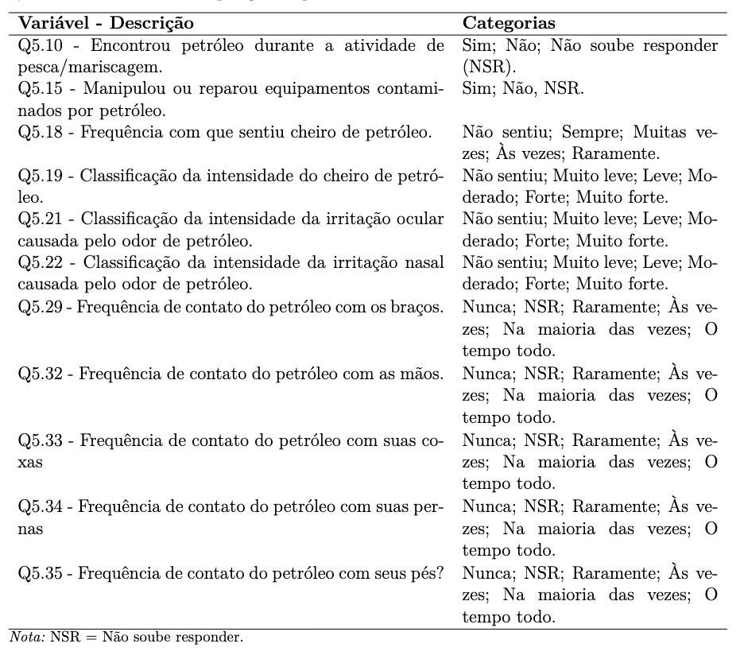

Universidade Federal da Bahia
Perfis de exposição ao petróleo entre pescadores(as) e marisqueiras afetados pelo derramamento do petróleo em 2019
Uma aplicação de Análise de Classes Latentes
Maria Vitória dos Santos Gonsalves
Orientadora: Verônica Maria Cadena Lima
Coorientadora: Leila Denise Amorim
Apresentação
Sumário
Introdução
Introdução
- A análise de classes latentes é um método estatístico que pertence à classe de modelos de mistura, utilizado para identificar subgrupos homogêneos não observados;
- O objetivo da LCA é a definição e caracterização da variável latente para identificar o número de classes que são capazes de descrever os padrões dos dados;
- Esta metodologia tem sido amplamente utilizada na epidemiologia.
Objetivos
Objetivo geral
O presente trabalho tem como objetivo geral estudar e descrever o método de análises de classes latentes e análises de classes latentes com covariáveis.
Objetivos específicos
- Identificar e caracterizar padrões de exposição ao petróleo, a partir das variáveis indicadoras de exposição ao petróleo durante as atividades de pesca, usando LCA;
- Estimar o efeito de características socioeconômicas no pertencimento aos perfis de exposição ao petróleo latentes usando LCA com covariáveis.
Justificativa
- Fornecer uma descrição mais detalhada dos perfis latentes de exposição;
- Aprofundar o estudo das variáveis relacionadas à exposição ao petróleo, identificando padrões de resposta e contribuindo para uma melhor compreensão da heterogeneidade entre os indivíduos expostos.
Revisão de literatura
Análise de classes latentes
A LCA é uma abordagem orientada para o indivíduo, no qual busca-se identificar subgrupos não observados a partir dos padrões de respostas das variáveis observadas.
Independência local
Um dos pressupostos da LCA é a independência local, ou seja, se as variáveis observadas são independentes dentro das subpopulações latentes.
Homogeneidade e separação da classe latente
- A homogeneidade em classes latentes refere-se à similaridade dos padrões de respostas pertencentes a uma mesma classe.
- A separação da classe latente refere-se à capacidade do modelo em diferenciar os diferentes grupos de classes latentes a partir dos padrões de respostas observados.
Seleção e avaliação do modelo
Para a seleção do número de classes latentes é importante considerar alguns princípios:
- Parcimônia;
- Interpretabilidade;
- Denominação das classes.
Critérios de seleção
Entre alguns critérios:
- AIC;
- BIC;
- Estatística qui-quadrado de Pearson (χ²);
- Estatística da razão de verossimilhança (G²);
- Teste de diferença da razão de verossimilhança (TRV);
- Lo-Mendell-Rubin ajustado (LMR ajustado);
- Vuong-Lo-Mendell-Rubin (VLMR).
Metodologia
Descrição dos dados
- Foram coletadas aproximadamente 5.380 toneladas de resíduos do petróleo ao longo da costa brasileira;
- Moradores e trabalhadores dessas regiões, principalmente pescadores(as) artesanais, marisqueiras e demais povos participaram da limpeza do petróleo no litoral, muitas vezes sem o uso de equipamentos de proteção;
- O estudo trata de uma pesquisa de natureza observacional e descritiva com delineamento de corte transversal;
- O questionário contém 325 perguntas, divididas em 13 blocos.
Variáveis do estudo
Variáveis de exposição ao petróleo utilizadas na Análise de Classes Latentes.

Figura 1: Variáveis de exposição ao petróleo utilizadas na Análise de Classes Latentes.
Análise estatística
- Análise descritiva;
- Variáveis indicadoras agrupadas;
- Como é recomendado na LCA que a proporção das respostas das categorias das indicadoras observadas seja maior ou igual a 10%, algumas indicadoras de exposição foram recategorizadas.
Diagrama da LCA
Diagrama da LCA de exposição ao petróleo entre pescadores(as) e marisqueiras.
Espaço reservado para o diagrama original.Figura 2: Diagrama da LCA de exposição ao petróleo entre pescadores(as) e marisqueiras.
LCA com covariáveis
petróleo
Figura 3: Diagrama da LCA com covariáveis da exposição ao petróleo entre pescadores(as) e marisqueiras.
Resultados
Descrição da amostra
Tabela 1: Distribuição das variáveis socioeconômicas, demográficas e ocupacionais entre pescadores expostos ao derramamento de petróleo (2019–2020).
| Variável | Categoria | n | Frequência (%) |
|---|---|---|---|
| Sexo | Feminino | 536 | 55,89 |
| Masculino | 423 | 44,11 | |
| Idade | Até 30 anos | 130 | 13,56 |
| 31 a 40 anos | 275 | 28,68 | |
| Acima de 40 anos | 554 | 57,76 | |
| Escolaridade | Fundamental | 664 | 69,24 |
| Médio/Universitário | 295 | 30,76 | |
| Renda mensal | Até meio salário mínimo | 208 | 21,69 |
| De meio a um salário mínimo | 411 | 42,86 | |
| Acima de um salário mínimo | 340 | 35,45 | |
| Estado civil | Solteiro/Divorciado/Viúvo/Outros | 303 | 31,60 |
| Casado/União estável | 656 | 68,40 | |
| Localidade | APA Conde/APA Cairu | 293 | 30,55 |
| RESEX Canavieiras | 532 | 55,47 | |
| RESEX Corumbau | 134 | 13,97 | |
| Raça | Preto/Pardo | 814 | 84,88 |
| Branco/Indígena/Outros | 145 | 15,12 |
Comparação dos modelos
Tabela 2: Comparação dos modelos de classes latentes de acordo com as medidas de ajuste.
| Medida | 2 classes | 3 classes | 4 classes | 5 classes |
|---|---|---|---|---|
| Nº de observações | 959 | 959 | 959 | 959 |
| Nº de parâmetros estimados | 15 | 23 | 31 | 39 |
| Graus de liberdade residuais | 80 | 72 | 64 | 56 |
| AIC | 6101.938 | 5952.545 | 5914.170 | 5898.634 |
| BIC | 6174.926 | 6064.461 | 6065.013 | 6088.404 |
| Teste qui-quadrado (χ²) | 377.144 | 158.005 | 93.668 | 59.989 |
| LMR ajustado | <0.00001 | <0.00001 | 0.0003 | 0.0764 |
| VLMR | <0.00001 | <0.00001 | 0.0003 | 0.0735 |
Modelo com 3 classes latentes
Tabela 3: Parâmetros estimados para o modelo com 3 classes latentes.
Prevalência das classes: Baixa (50,71%), Moderada (27,99%) e Alta (21,31%).
| Indicador | Categoria | % global | Baixa | Moderada | Alta |
|---|---|---|---|---|---|
| Q5.10 — Durante a atividade de pesca e mariscagem, você encontrou petróleo? | Sim | 58,81 | 0,33 | 0,79 | 0,95 |
| Q5.15 — Você manipulou/reparou redes de pesca que continham resíduos de petróleo? | Sim | 27,32 | 0,09 | 0,31 | 0,65 |
| Q5.18.19 — Com que frequência e intensidade você sentiu o cheiro do petróleo? | Não sentiu | 49,74 | 0,95 | 0,00 | 0,08 |
| Baixa e moderada frequência/intensidade | 31,91 | 0,04 | 0,72 | 0,45 | |
| Alta frequência/intensidade | 18,35 | 0,01 | 0,28 | 0,47 | |
| Q5.21.22 — Exposição ao odor de petróleo quando irritante para os olhos/nariz | Houve exposição | 26,17 | 0,00 | 0,53 | 0,53 |
| Q5.29.32 — Exposição dos braços ou mãos ao petróleo | Houve exposição | 18,35 | 0,01 | 0,07 | 0,74 |
| Q5.33.34.35 — Exposição das coxas, pernas ou pés ao petróleo | Houve exposição | 15,22 | 0,02 | 0,03 | 0,64 |
Associação entre covariáveis e pertencimento às classes
Tabela 4: Associação entre covariáveis e pertencimento às classes latentes. Grupo de referência: baixa exposição.
| Variável | Categoria | Moderada OR (IC95%) | Alta OR (IC95%) |
|---|---|---|---|
| Sexo | Feminino (ref.) | 1,00 | 1,00 |
| Masculino | 1,52 (0,86; 2,66) | 0,75 (0,51; 1,11) | |
| Estado civil | Solteiro (ref.) | 1,00 | 1,00 |
| Casado/União estável | 0,65 (0,39; 1,08) | 0,71 (0,49; 1,02) | |
| Escolaridade | Fundamental (ref.) | 1,00 | 1,00 |
| Médio/Universitário | 1,66 (0,95; 2,90) | 1,29 (0,84; 1,98) | |
| Raça | Preto/Pardo (ref.) | 1,00 | 1,00 |
| Branco/Indígena/Outros | 1,04 (0,52; 2,08) | 1,12 (0,64; 1,98) | |
| Renda | Até meio salário mínimo (ref.) | 1,00 | 1,00 |
| De meio a um salário mínimo | 0,61 (0,27; 1,35) | 0,84 (0,45; 1,57) | |
| Acima de um salário mínimo | 0,69 (0,31; 1,52) | 0,77 (0,41; 1,42) | |
| Idade | Até 30 anos (ref.) | 1,00 | 1,00 |
| 31 a 40 anos | 0,75 (0,41; 1,38) | 0,96 (0,60; 1,53) | |
| Acima de 40 anos | 0,86 (0,45; 1,65) | 0,96 (0,59; 1,57) | |
| Localidade | APAs Conde e Cairu (ref.) | 1,00 | 1,00 |
| RESEX Canavieiras | 0,64 (0,26; 1,55) | 0,72 (0,38; 1,36) | |
| RESEX Corumbau | 0,82 (0,33; 2,04) | 0,66 (0,31; 1,40) |
Próximos passos
Próximos passos
- Implementação da estimação dos parâmetros de LCA com covariáveis em 3 etapas;
- Estudo e sumarização de LCA com respostas distais;
- Aplicação de LCA com respostas distais aos dados do derramamento.
Referências
Referências I
- Amorim, L. D. A. F.; Freire, M. E. S.; Tuy, P. G. d. S. E.; Leroux, J. M.; Bahamonde, N. M. S. G. “Análise de classes latentes: Um tutorial usando software estatístico”. Universidade Federal da Bahia, 2015. Disponível no Repositório Institucional da UFBA.
- Almeida, R. R. d. S. M. T. d. “O derramamento de óleo na costa nordestina e a responsabilização civil pelos danos existenciais causados aos povos das águas”. In: Direitos fundamentais em processo. Brasília: ESMPU, 2020.
- Fattore, G. L.; Amorim, L. D.; Santos, L. M. d.; Santos, D. N. d.; Barreto, M. L. “Experiences of discrimination and skin color among women in urban brazil: A latent class analysis”. Journal of Black Psychology, 46, 144–168, 2020.
Referências II
- Meyers-Pantele, S.; Rendina, H.; Talan, A.; Shalhav, O.; Lammert, S.; Horvath, K. “Characterizing substance use typologies and their association with hiv viral load outcomes: A latent class analysis among sexual minority men living with hiv”. Drug and Alcohol Dependence, 227, 108928, 2021.
- Rêgo, R. F.; Machado, L. O. R.; Sentilles, F.; Mota, L. d. S. R. d.; Lima, V. M. C.; Meyer, A.; Northcross, A. L. “Developing epidemiological research in response to an oil spill disaster in brazil: study design and validation of a questionnaire”. Ciência & Saúde Coletiva, 31(1), 2026.
Referências III
- Soares, M. O.; Teixeira, C. E. P.; Bezerra, L. E. A.; Rabelo, E. F.; Castro, I. B.; Cavalcante, R. M. “The most extensive oil spill registered in tropical oceans (brazil): the balance sheet of a disaster”. Environmental Science and Pollution Research, 29, 19869–19877, 2022.
- Collins, L. M.; Lanza, S. T. Latent Class and Latent Transition Analysis. John Wiley and Sons, Hoboken, New Jersey, 2010.
- Weller, B. E.; Bowen, N. K.; Faubert, S. J. “Latent class analysis: A guide to best practice”. Journal of Physiotherapy, 66(4), 287–292, 2016.
Referências IV
- Lissa, C. J. V.; Garnier-Villarreal, M.; Anadria, D. “Recommended practices in latent class analysis using the open-source r-package tidysem”. Structural Equation Modeling: A Multidisciplinary Journal, 31(3), 526–534, 2023.
- Kongsted, A.; Nielsen, A. M. “Latent class analysis in health research”. Journal of Physiotherapy, 55–58, 2017.
- Muthén, L. K.; Muthén, B. O. Mplus User’s Guide. 8th ed. Los Angeles, CA, 1998–2017. Version 8.
Referências V
- Pena, P. G. L. et al. “Derramamento de óleo bruto na costa brasileira em 2019: emergência em saúde pública em questão”. Cadernos de Saúde Pública, 36(2), 2020.
- Linzer, D.; Lewis, J. poLCA: Polytomous Variable Latent Class Analysis, 2026. R package version 1.6.0.2.
- R Core Team. R: A Language and Environment for Statistical Computing. R Foundation for Statistical Computing, Vienna, Austria, 2026.
- Kline, R. B. Principles and Practice of Structural Equation Modeling. 4th ed. The Guilford Press, 2016.
Referências VI
- Carvalho, M. N.; Falcão, I. R.; Lima, V. M. C.; Filho, E. d. S. R.; Machado, L. O. R.; Sentilles, F.; Rêgo, R. d. C. F. “Vulnerabilização socioambiental de pescadores(as) artesanais frente ao derramamento de petróleo de 2019: exposição humana, ameaças à saúde e trabalho na região nordeste do brasil”. Revista Brasileira de Saúde Ocupacional, 50, 2025.
- Porcu, M.; Giambona, F. “Introduction to latent class analysis with applications”. Journal of Early Adolescence, 37(1), 129–158, 2017.